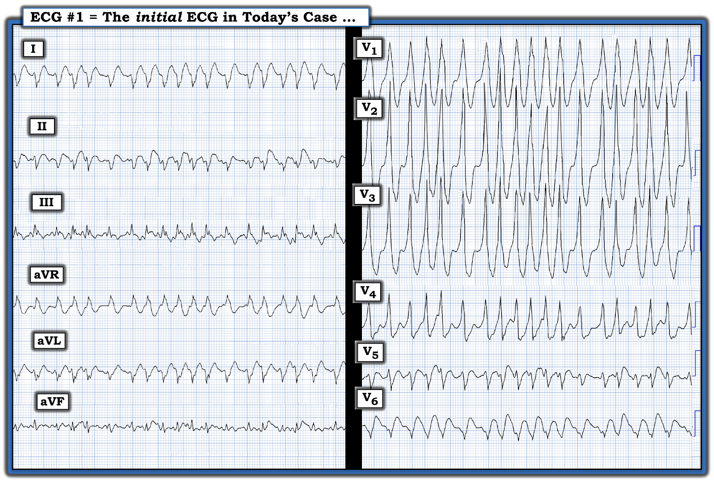
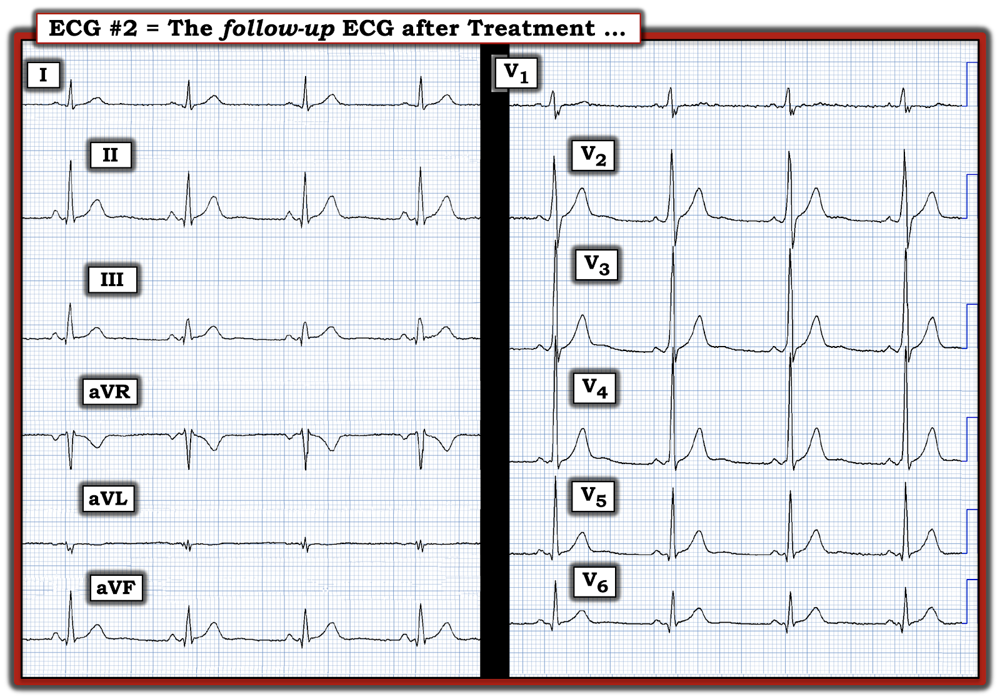
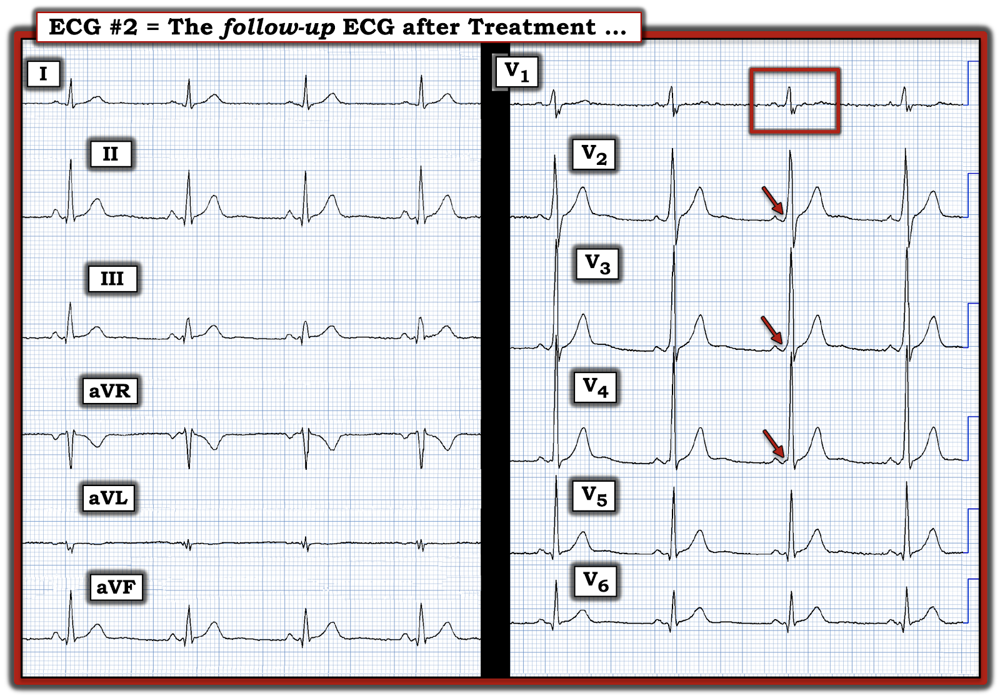

ECG Blog #371 — Hồi hộp đánh trống ngực từ thời thơ ấu ...
Điện tâm đồ ở Hình 1 là của một người đàn ông ở độ tuổi 30 — nhìn chung khỏe mạnh, ngoại trừ tiền sử "hồi hộp đánh trống ngực từng đợt" mà anh bị từ thời thơ ấu. Các cơn thường kéo dài dưới 2 phút — nhưng lần này, anh đến ED (khoa cấp cứu — Emergency Department) vì triệu chứng kéo dài liên tục nhiều giờ.
- Bệnh nhân đã uống rượu tại một bữa tiệc vào tối hôm trước.
- Anh ổn định huyết động với điện tâm đồ #1.
CÂU HỎI:
- Nhịp ở Hình 1 là nhịp gì?


SUY NGHĨ CỦA TÔI về điện tâm đồ ở Hình 1:
Tôi đã nhiều lần trình bày những điện tâm đồ tương tự bản ghi hôm nay (gần đây nhất là trong ECG Blog #284). Khả năng nhìn vào điện tâm đồ ở Hình 1 — và đưa ra ngay một chẩn đoán giả định tức thì quan trọng đến mức việc ôn lại định kỳ là xứng đáng.
- "Nhận định" NHANH: Phức bộ QRS ở điện tâm đồ #1 rõ ràng là rộng — và không có sóng P (tức là, nhân viên cấp cứu sẽ lập tức nghĩ đến một dạng nào đó của VT = nhịp nhanh thất — Ventricular Tachycardia). Nhưng nhịp này không đều ...
Các đặc điểm chẩn đoán MẤU CHỐT của nhịp hôm nay gồm:
- Điểm #1: Quan sát kỹ — khoảng R-R thay đổi từ nhát này sang nhát kế tiếp (tức là, nhịp không đều hoàn toàn! — và không có sóng P).
- Điểm #2: Hình dạng QRS thay đổi đôi chút trên suốt bản ghi (tức là, một số nhát rộng hơn — và ít nhất hơi khác về hình dạng so với các nhát khác).
- Điểm #3: Ở một số thời điểm — nhịp nhanh cực kỳ (tức là, một số khoảng R-R chỉ dài hơn 1 ô lớn một chút — tương ứng với tần số thất có lúc vượt quá 250/phút!). Ở những thời điểm khác — khoảng R-R dài gần gấp đôi.
- Điểm #4: Về lâm sàng, mặc dù tần số cực kỳ nhanh — bệnh nhân vẫn ổn định huyết động vào thời điểm ghi điện tâm đồ #1.
- Điểm #5: Bệnh nhân kể tiền sử lâu năm hồi hộp đánh trống ngực từng đợt. Anh đến khoa cấp cứu vài giờ sau một bữa tiệc, tại đó anh đã uống một lượng không rõ rượu.
NHẬN ĐỊNH CỦA TÔI:
Nhịp ở Hình 1 gần như chắc chắn là AFib rất nhanh ở một bệnh nhân có WPW.
- Mặc dù VT đôi khi có thể hơi không đều — nhưng nói chung nó không đến mức không đều hoàn toàn như nhịp ở Hình 1, ngoại trừ trường hợp PMVT (VT đa dạng — PolyMorphic VT). Dù vậy — PMVT hầu như luôn xảy ra ở bệnh nhân lớn tuổi có bệnh tim nền đáng kể — và trong những trường hợp như vậy, bệnh nhân thường không ổn định huyết động!
- Thực thể còn lại cần cân nhắc ở một người trẻ tuổi có nhịp như ở Hình 1 — là CPVT (VT đa dạng do catecholamine — Catecholaminergic PolyMorphic VT). Như đã bàn trong ECG Blog #363 — rối loạn di truyền hiếm gặp này hầu như luôn biểu hiện khi có căng thẳng cảm xúc hoặc khi gắng sức (tức là, CPVT thường được "khởi phát" bởi sự phóng thích catecholamine).
- LƯU Ý #1: Mặc dù không thể loại trừ CPVT trong ca hôm nay — tiền sử lâu dài những cơn hồi hộp đánh trống ngực từng đợt, ngắn ở một người trẻ tuổi đến viện sau khi uống rượu với nhịp cực kỳ nhanh, không đều hoàn toàn như ở Hình 1 — khả năng cao hơn nhiều là do AFib rất nhanh ở bệnh nhân có WPW.
- LƯU Ý #2: Điều đáng ngạc nhiên là không hiếm bệnh nhân AFib kèm WPW vẫn ổn định huyết động — mặc dù có tần số thất cực kỳ nhanh. Nhiều bệnh nhân WPW này là người trẻ tuổi, dung nạp được tần số thất nhanh.
CA BỆNH HÔM NAY TIẾP DIỄN:
Vì bệnh nhân ổn định huyết động khi có nhịp ở Hình 1 — người ta đã cân nhắc thử dùng thuốc chống loạn nhịp. Trong số các thuốc dùng để điều trị AFib rất nhanh kèm WPW (giả định) — có Procainamide, Amiodarone và Ibutilide đường tĩnh mạch (IV). Việc bàn về ưu và nhược điểm của các thuốc này vượt ra ngoài phạm vi của bài ECG Blog này.
- Mặc dù đôi khi có thể thử dùng thuốc chống loạn nhịp (với điều kiện bác sĩ ở lại bên giường bệnh suốt quá trình) — sốc điện chuyển nhịp đồng bộ thường được ưu tiên để điều trị AFib kèm WPW, do đáp ứng thất cực kỳ nhanh trong rối loạn nhịp này.
- Trong ca hôm nay, bác sĩ phụ trách đã đổi hướng điều trị sang sốc điện chuyển nhịp đồng bộ ngay. Nhịp thu được sau sốc điện được trình bày ở Hình 2. — BẠN thấy gì?


SUY NGHĨ CỦA TÔI về bản ghi sau chuyển nhịp:
Sốc điện chuyển nhịp đồng bộ đã thành công — với sự phục hồi sóng P xoang bình thường ở chuyển đạo II của Hình 2.
CÂU HỎI:
- BẠN có thấy các sóng delta ở Hình 2 không? Nếu chưa — hãy XEM Hình 3.


Xem kỹ hơn Hình 3:
Sóng delta trên bản ghi sau chuyển nhịp rất kín đáo!
- Sẽ cực kỳ dễ bỏ sót chẩn đoán WPW từ điện tâm đồ #2 — vì chúng ta không thấy bằng chứng WPW ở bất kỳ chuyển đạo chi nào.
- Một manh mối MẤU CHỐT cho thấy bệnh nhân trong ca hôm nay có thể có WPW — đến từ việc nhận ra rằng sóng R ở chuyển đạo V1 cao bất thường (Xem phức bộ QRS trong hình chữ nhật ĐỎ ở chuyển đạo V1 của Hình 3). Bình thường, phức bộ QRS chủ yếu âm ở chuyển đạo bên phải V1 — vì vectơ khử cực thất chủ đạo bình thường hướng ra xa chuyển đạo bên phải này, và về phía các chuyển đạo bên trái V5,V6 (Xem ECG Blog #81 và Blog #153 — để có DANH SÁCH các thực thể chẩn đoán cần cân nhắc khi có sóng R cao ở chuyển đạo V1).
- Nhận ra sóng R cao ở chuyển đạo V1 — nên thôi thúc bạn nhìn kỹ hơn nhiều vào phần đầu của phức bộ QRS ở cả 12 chuyển đạo trên bản ghi sau chuyển nhịp này. Làm như vậy sẽ thấy trát đậm (tức là, sóng delta) kín đáo nhưng không thể nhầm lẫn ở phần đầu phức bộ QRS tại các chuyển đạo V2, V3 và V4 (các mũi tên ĐỎ ở Hình 3).
- Xin nhấn mạnh: Bạn sẽ không phải lúc nào cũng thấy sóng delta ở cả 12 chuyển đạo của một điện tâm đồ. Đó là vì dẫn truyền qua AP (đường phụ — Accessory Pathway) có thể chỉ là một phần (tức là, một tỷ lệ xung động nhỏ hơn hoặc lớn hơn lại đi qua đường dẫn truyền bình thường qua nút AV). Với QRS chỉ kéo dài tối thiểu trên bản ghi sau chuyển nhịp — lúc này chỉ có tiền kích thích một phần.
- T.B. (P.S.) (Vượt ra ngoài phần cốt lõi): NẾU bạn nhìn thật kỹ vào điểm khởi đầu của phức bộ QRS ở các chuyển đạo V5,V6 của Hình 3 (thấy rõ nhất trên ipad nếu bạn "kéo giãn" màn hình để phóng to) — và cũng nhìn ở các chuyển đạo chi II,III,aVF — tôi tin rằng có một chỗ lồi nhỏ, "tròn như cục u nhỏ" (dài chưa tới 1 ô nhỏ) hướng dương, xuất hiện ngay trước sóng âm (sóng q) ở các chuyển đạo này. Tôi hoàn toàn thừa nhận rằng tôi chỉ thấy điều này khi nhìn lại — nhưng tôi tin "cục u nhỏ" tròn rất nhỏ xuất hiện ngay trước sóng q ở 5 chuyển đạo này chính là một sóng delta rất nhỏ.
KẾT LUẬN CA BỆNH:
Bệnh nhân hôm nay được chuyển đến chuyên khoa Điện sinh lý tim (EP). Thăm dò điện sinh lý phát hiện một AP ở thành bên phía trái — và đã được triệt đốt thành công.
- Có lẽ lượng rượu uống tại bữa tiệc tối hôm trước là yếu tố thúc đẩy cơn AFib — và do có AP, cơn AFib này có thể dẫn truyền với đáp ứng thất cực kỳ nhanh.
==================================
Vượt ra ngoài phần cốt lõi: Bạn có thể xác định vị trí AP?
Mặc dù xác định vị trí AP ở bệnh nhân WPW không thiết yếu đối với bác sĩ tim mạch không chuyên về điện sinh lý (tức là, chỉ cần nhận ra và chuyển một bệnh nhân có rối loạn nhịp liên quan WPW là đã quá đủ) — tôi thấy việc xác định vị trí có khả năng của AP thật thú vị và đem lại nhiều hài lòng.
- Với bác sĩ điện sinh lý tim — xác định vị trí AP trước thăm dò điện sinh lý không chỉ mang tính học thuật, vì nó giúp thuận lợi và nhanh hơn cho việc định vị AP trong quá trình thăm dò điện sinh lý. Ngoài ra — biết vị trí AP giúp lập kế hoạch cho thủ thuật thăm dò điện sinh lý, cũng như trong trao đổi với bệnh nhân — vì nguy cơ của triệt đốt qua ống thông và tỷ lệ thành công dự kiến phần nào phụ thuộc vào vị trí AP.
- Trong nhiều năm — tôi đã nghiên cứu nhiều thuật toán được đề xuất để dự đoán vị trí AP dựa trên các kết quả thăm dò điện sinh lý. Tôi đã tổng hợp những gì tôi thấy TỐT NHẤT từ các chương trình này trong ECG Blog #76 của tôi.
- Điểm MẤU CHỐT: Xác định vị trí AP bằng điện tâm đồ chính xác nhất khi có tiền kích thích hoàn toàn. Độ chính xác sẽ kém hơn khi chỉ có tiền kích thích một phần (như trên bản ghi sau chuyển nhịp ở Hình 3 trong ca hôm nay) — vì các đặc điểm của sóng delta bị giảm đi. Dù vậy — thuật toán của tôi vẫn dự đoán tốt vị trí AP trong ca hôm nay.
Áp dụng thuật toán của tôi (từ ECG Blog #76):
- Bước thứ 1 trong thuật toán của tôi — là xác định vùng chuyển tiếp nằm ở đâu trên các chuyển đạo trước tim (tức là, giữa 2 chuyển đạo nào thì sóng R trở nên dương nhiều hơn độ sâu của sóng S). Vì sóng R ở chuyển đạo V1 của điện tâm đồ #2 (ở Hình 3) chủ yếu dương — điều này cho chúng ta biết: i) AP nằm ở phía TRÁI; — và, ii) Chúng ta nên bắt đầu với Bước A-1 trong ECG Blog #76 của tôi.
- Bước A-1 — là tính tổng cực tính của sóng delta ở 3 chuyển đạo thành dưới. Như phần "T.B." ở trên — tôi tin rằng "cục u nhỏ" tròn, bé xíu xuất hiện ngay trước sóng q ở mỗi chuyển đạo thành dưới trong Hình 3 chính là sóng delta ở các chuyển đạo này. Vì cục u nhỏ này dương — tổng cực tính ở các chuyển đạo thành dưới trong Bước A-1 = +3 — gợi ý nhiều khả năng có một AP ở thành tự do LV phía trước bên.
==================================
LƯU Ý: Trong Phần bổ sung bên dưới — tôi đã trích lại ở Hình 4, 5, 6 và 7 (từ ECG-2014-ePub của tôi) — những Mục ôn lại kiến thức cơ bản về chẩn đoán WPW trên điện tâm đồ — và — đánh giá các rối loạn nhịp thường gặp ở WPW.
- BẤM VÀO ĐÂY — để tải bản PDF nội dung của 4 hình này.
==========================================
Lời cảm ơn: Tôi xin cảm ơn Magnus Nossen (Fredrikstad, Na Uy) đã chia sẻ ca bệnh và bản ghi này.
==========================================

==================================
Các bài ECG Blog liên quan đến ca hôm nay:
- ECG Blog #205 — Ôn lại Cách tiếp cận hệ thống của tôi khi đọc điện tâm đồ 12 chuyển đạo.
- ECG Blog #185 — Ôn lại cách tiếp cận Ps, Qs, 3R để đọc nhịp một cách hệ thống.
LƯU Ý: Các bài blog và tài liệu tham khảo sau cung cấp thêm thông tin về WPW:
- Dự đoán vị trí AP ở WPW từ điện tâm đồ — Xem ECG Blog #76.
- ECG Blog #153 — Ôn lại Chẩn đoán trên Điện tâm đồ về WPW (cũng như ý nghĩa khi phát hiện WPW ở bệnh nhân không triệu chứng).
- ECG Blog #284 — Ôn lại một ca tương tự AFib rất nhanh hôm nay.
- ECG Blog #18 — Ôn lại một ca khác về AFib rất nhanh.
- ECG Blog #37 — Đặt sai vị trí điện cực và AFib rất nhanh.
- ECG Blog #81 — Ôn lại một ca WPW kín đáo (biểu hiện bằng sóng R cao ở chuyển đạo V1).
- ECG Blog #87 — Ôn lại một ca WPW với dẫn truyền qua AP từng lúc.
- ECG Blog #121 — Ôn lại một ca WPW kín đáo (có minh họa hiệu ứng đàn xếp (concertina)).
- ECG Blog #157 — Bạn có thể chẩn đoán thiếu máu cục bộ và/hoặc nhồi máu khi có WPW không?
- Về ca tôi đã trình bày trong bài ngày 11 tháng 3 năm 2020 trên Dr. Smith's ECG Blog — minh họa các dấu hiệu điện tâm đồ tương tự ca hôm nay (tức là, AFib rất nhanh + WPW).
- Xem My Comment trong bài ngày 1 tháng 6 năm 2020 trên Dr. Smith's ECG Blog — trong đó tôi bàn về các dạng khác nhau của VT (tức là, đơn dạng, đa dạng, đa hình thái, hai chiều).
==================================
PHẦN BỔ SUNG (ngày 29 tháng 3 năm 2023):
Tôi đã trích lại ở Hình 4, 5, 6 và 7 (từ ECG-2014-ePub của tôi) — những Mục ôn lại kiến thức cơ bản về chẩn đoán WPW trên điện tâm đồ — và — đánh giá các rối loạn nhịp thường gặp ở WPW.
- BẤM VÀO ĐÂY — để tải bản PDF nội dung của 4 hình này.